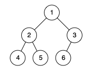
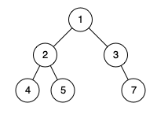

958. 二叉树的完全性检验
BFS 按堆编号（根 1，孩子 2i/2i+1）：第 count 个出队的结点编号必须恰好是 count，跳号即非完全。
思路
- 完全二叉树的层序编号恰好是
1..n连续；BFS 依次出队，第count个出队的结点编号必须正好是count。 - 编号规则：根
1，左孩子2i、右孩子2i+1；一旦跳号（如出队编号 7 时才出队到 6），说明中间有空位。 - 编号随深度翻倍增长，用
long存更稳。
图解
最优解
1import java.util.*;2 3class Solution {4 public boolean isCompleteTree(TreeNode root) {5 // 完全二叉树按层序编号：根 1，孩子 2i / 2i+16 // 编完号结点恰好占满 1..n，中间不留空号7 Queue<TreeNode> q = new ArrayDeque<>();8 Queue<Long> ids = new ArrayDeque<>();9 q.add(root);10 ids.add(1L);11 int count = 0;12 while (!q.isEmpty()) {13 TreeNode cur = q.poll();14 long id = ids.poll();15 // 第 count 个出队的结点，编号必须正好是 count，跳号说明有空位16 if (++count != id) return false;17 if (cur.left != null) { q.add(cur.left); ids.add(2 * id); }18 if (cur.right != null) { q.add(cur.right); ids.add(2 * id + 1); }19 }20 return true;21 }22}题目
给你一棵二叉树的根节点 root ，请你判断这棵树是否是一棵 完全二叉树 。
在一棵 完全二叉树 中，除了最后一层外，所有层都被完全填满，并且最后一层中的所有节点都尽可能靠左。最后一层（第 h 层）中可以包含 1 到 2h 个节点。
示例 1：

输入：root = [1,2,3,4,5,6]
输出：true
解释：最后一层前的每一层都是满的（即，节点值为 {1} 和 {2,3} 的两层），且最后一层中的所有节点（{4,5,6}）尽可能靠左。
示例 2：

输入：root = [1,2,3,4,5,null,7] 输出：false 解释：值为 7 的节点不满足条件「节点尽可能靠左」。
提示：
- 树中节点数目在范围
[1, 100]内 1 <= Node.val <= 1000
题面取自力扣当前版本。
数据快照 2026-11-04。题面版权归力扣所有，本站点仅供本人学习使用，请勿对外发布。